Task scheduling has become increasingly critical for embodied AI, where agents need to follow natural language instructions and execute actions efficiently in 3D physical worlds. Existing datasets for task planning in 3D environments often simplify the problem, lacking operations research knowledge for task scheduling and 3D grounding for real-world applications. In this work, we propose Operation Research Knowledge-based 3D Grounded Task Scheduling (ORS3D), a new task that requires synerization of language understanding, 3D grounding and efficiency optimization for embodied agents. ORS3D reflects real-world demands by requiring agents to generate efficient, step-by-step schedules that are grounded in 3D space. To facilitate research on ORS3D, we construct a large-scale dataset called ORS3D-60K, comprising 60K tasks across 4K real-world scenes. Furthermore, we propose GRANT, an embodied multi-modal large language model equipped with a simple yet effective scheduling token mechanism to generate efficient task schedules and grounded actions. Extensive experiments on the ORS3D-60K dataset validate the effectiveness of GRANT across language understanding, 3D grounding, and scheduling efficiency.
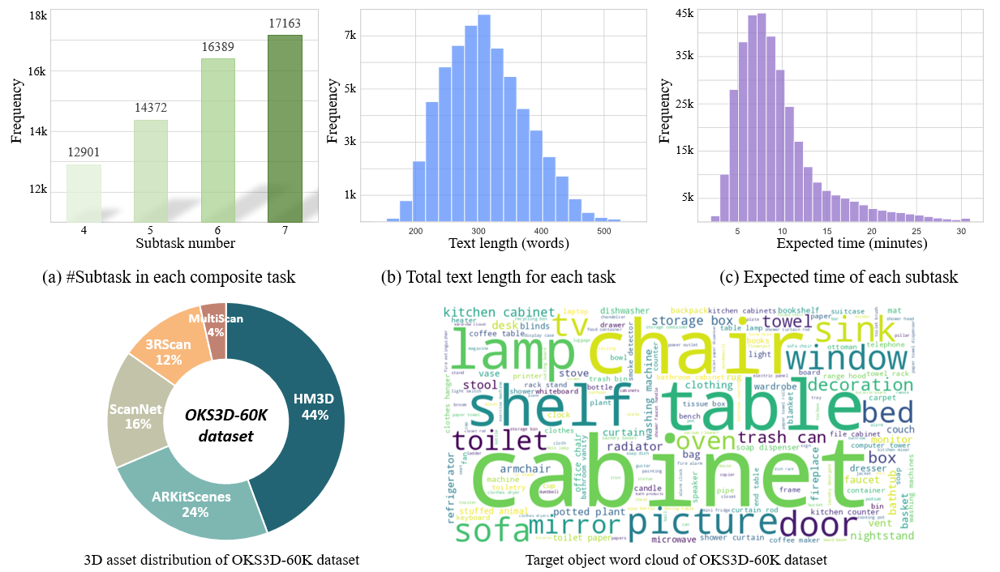
Here we present a few examples from the ORS3D-60K dataset using a 3D data explorer. Each composite task consists of several subtasks, each with an expected duration. An agent is expected to generate a step-by-step schedule to complete the task efficiently. In addition, it needs to ground the target object in each step.
To use the data explorer, first select from the available scenes in the selection bar. The
composite
task requirements and their corresponding efficient step-by-step schedule will be displayed in the right
column. Click on a step to visualize its target object with a green mask in the scene.
3D Visualizer Control: Left click + Drag = Rotate
Right click + Drag = Translate
Scroll Up/Down = Zoom In/Out
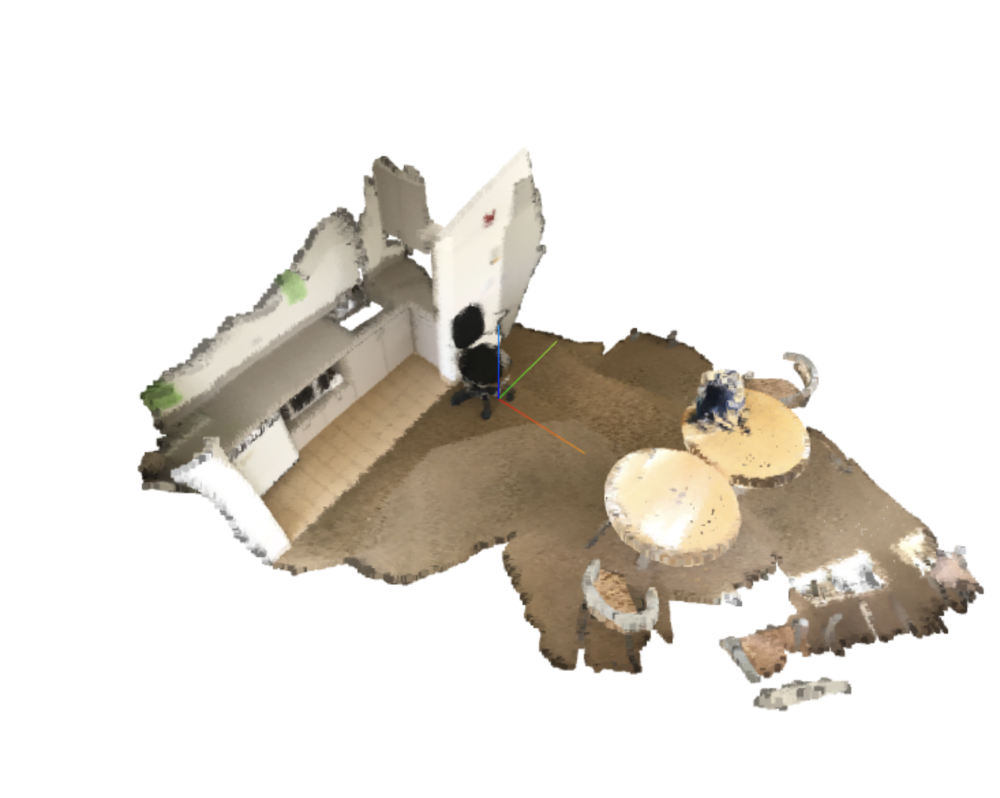
ScanNet: scene0048_00
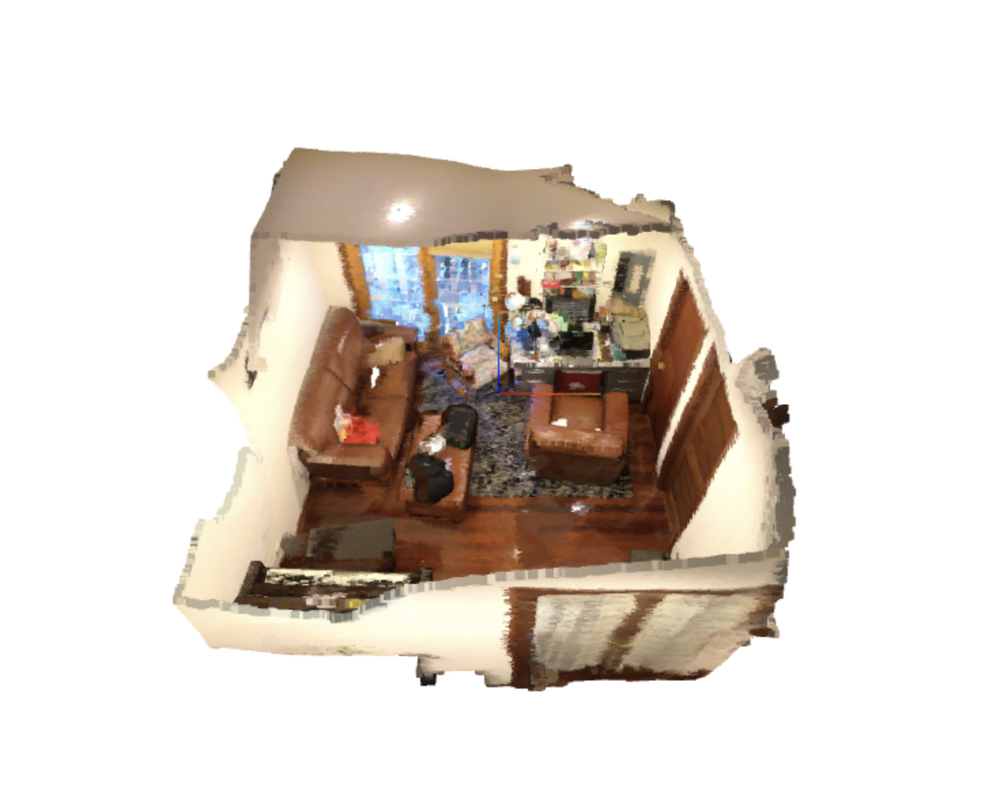
ScanNet: scene0050_00
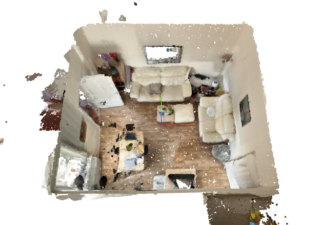
ARKitScenes: 48458678
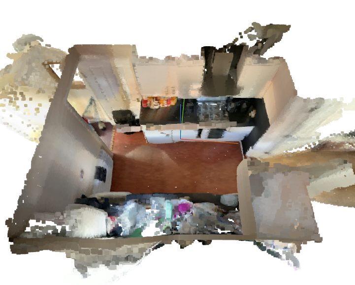
ARKitScenes: 48458784
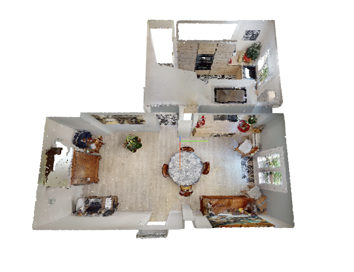
HM3D: 00009-vLpv2VX547B_sub002
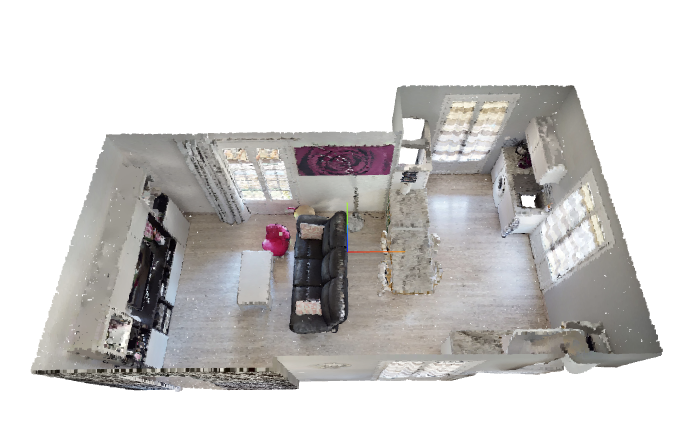
HM3D: 00009-vLpv2VX547B_sub003
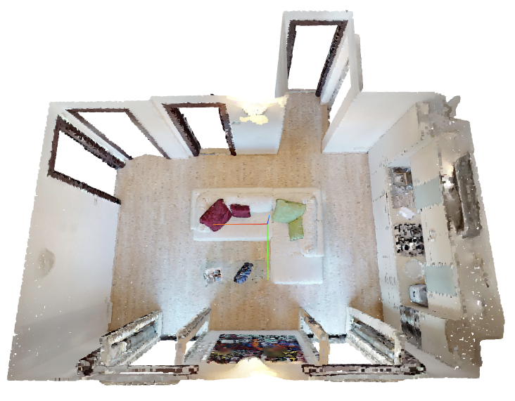
HM3D: 00025-ixTj1aTMup2_sub003
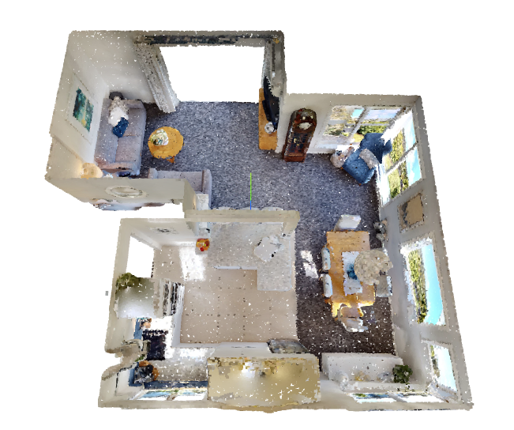
HM3D: 00031-Wo6kuutE9i7_sub002
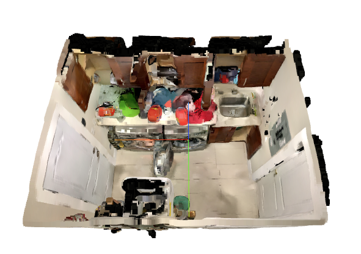
MultiScan: scene_00030_00
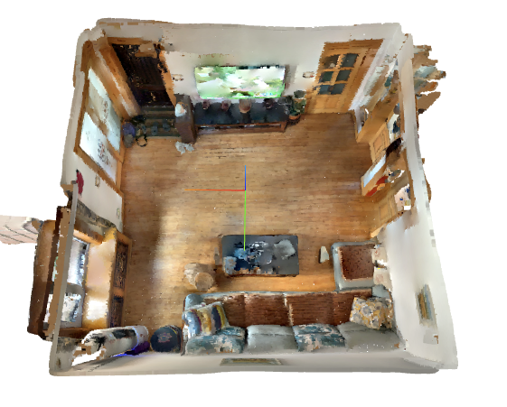
MultiScan: scene_00006_00
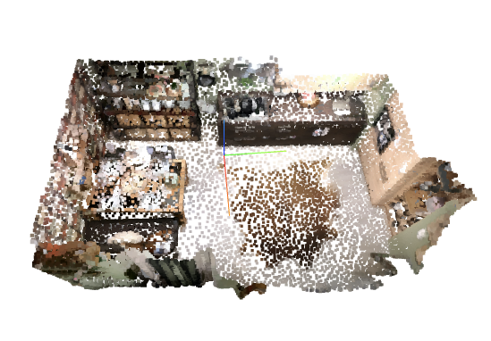
3RScan: 0cac75e4-8d6f...
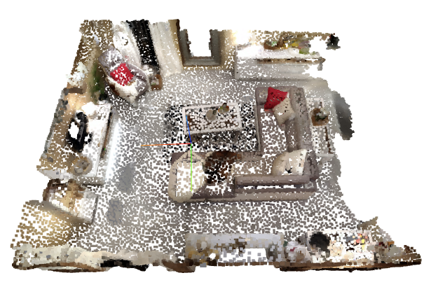
3RScan: 0cac7580-8d6f...
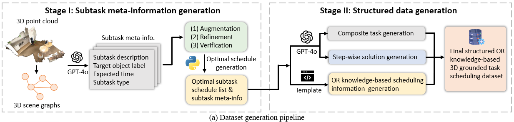
@inproceedings{
Comming soon!
}